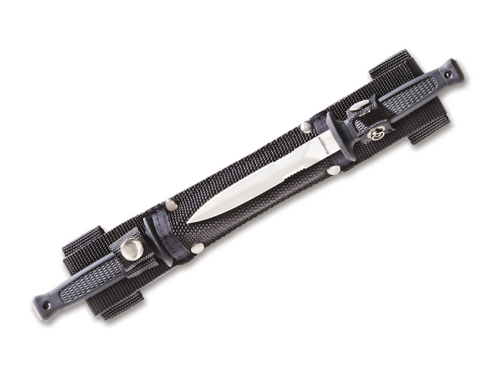

productos
pal 2
PAL II Racionalizando y optimizando la función de la empuñadura surgió esta alternativa de cuchillo más sufrido donde el Santoprene es impenetrable a la humedad, optimizando la relación precio/funcionalidad. PAL fue distinguido en Estados Unidos dentro de los 10 mejores cuchillos del mercado americano por la revista especializada Blade. Empuñadura de SANTOPRENE negro, antideslizante estructurado, con el logo Boker. Moldura para los dedos en la parte anterior, lo que brinda extraordinaria seguridad. Vaina de cuero negra.
spike kerambit
Este Kerambit de gran tamaño no deja nada que desear. Hoja pasante de acero 440A con cobertura negra indeleble representa la garra del tigre. Las cachas de G10 color arena ranuradas proporcionna un agarre excepcional. El anillo característico del Kerambits también incluye una punta extrema para mayor funcionalidad. La simplicidad de este diseño realza el atractivo del Spike Kerambit, sin adornos innecesarios. Provisto con funda kiddex y adaptador para cinturón que permite múltiples posiciones.
doublette
Para llevar cómodamente en el cinturón en posición horizontal. Las hojas de las daga son de acero inoxidable 420 de 10 centímetros de largo parcialmente dentadas de ambos lados. La vaina es de cordura negra y tiene un refuerzo de plástico interior para que las hojas se inserten de forma segura, ademas de un broche de presión que impide que se caigan por algún movimiento brusco. La empuñadura es de santoprene negro con textura segrinada que garantizan el mejor manejo incluso en condiciones climáticas adversas. También con agujero pasacinta.